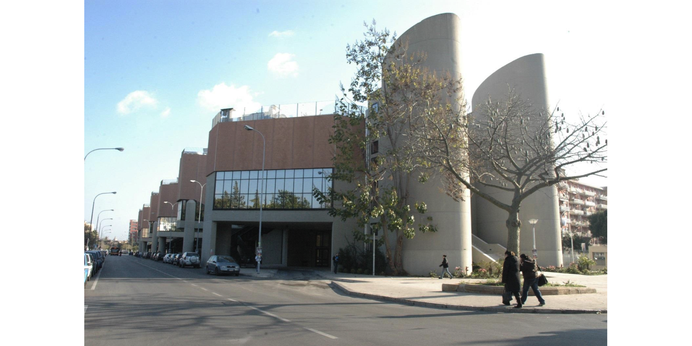
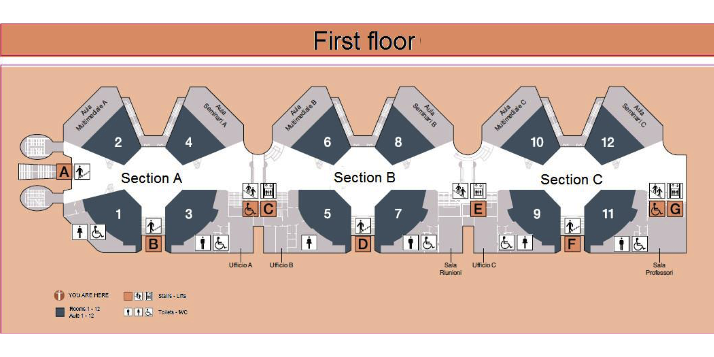

<!DOCTYPE html>

<html>

<head>

<meta charset="utf-8" />
<meta name="generator" content="pandoc" />
<meta http-equiv="X-UA-Compatible" content="IE=EDGE" />


<title>About This Conference</title>

<script src="site_libs/header-attrs-2.24/header-attrs.js"></script>
<script src="site_libs/jquery-3.6.0/jquery-3.6.0.min.js"></script>
<meta name="viewport" content="width=device-width, initial-scale=1" />
<link href="site_libs/bootstrap-3.3.5/css/flatly.min.css" rel="stylesheet" />
<script src="site_libs/bootstrap-3.3.5/js/bootstrap.min.js"></script>
<script src="site_libs/bootstrap-3.3.5/shim/html5shiv.min.js"></script>
<script src="site_libs/bootstrap-3.3.5/shim/respond.min.js"></script>
<style>h1 {font-size: 34px;}
       h1.title {font-size: 38px;}
       h2 {font-size: 30px;}
       h3 {font-size: 24px;}
       h4 {font-size: 18px;}
       h5 {font-size: 16px;}
       h6 {font-size: 12px;}
       code {color: inherit; background-color: rgba(0, 0, 0, 0.04);}
       pre:not([class]) { background-color: white }</style>
<script src="site_libs/jqueryui-1.13.2/jquery-ui.min.js"></script>
<link href="site_libs/tocify-1.9.1/jquery.tocify.css" rel="stylesheet" />
<script src="site_libs/tocify-1.9.1/jquery.tocify.js"></script>
<script src="site_libs/navigation-1.1/tabsets.js"></script>
<link href="site_libs/font-awesome-6.4.2/css/all.min.css" rel="stylesheet" />
<link href="site_libs/font-awesome-6.4.2/css/v4-shims.min.css" rel="stylesheet" />
<!DOCTYPE html PUBLIC "-//W3C//DTD HTML 4.01//EN" "http://www.w3.org/TR/html4/strict.dtd">
<html>
<head>
  <meta http-equiv="Content-Type" content="text/html; charset=utf-8">
  <meta http-equiv="Content-Style-Type" content="text/css">
  <title></title>
  <meta name="Generator" content="Cocoa HTML Writer">
  <meta name="CocoaVersion" content="1504">
  <!-- this script changes the anchor position -->
  <!-- http://jsfiddle.net/ianclark001/rkocah23/ -->
<script>
(function(document, history, location) {
  var HISTORY_SUPPORT = !!(history && history.pushState);

  var anchorScrolls = {
    ANCHOR_REGEX: /^#[^ ]+$/,
    OFFSET_HEIGHT_PX: 65,

    /**
     * Establish events, and fix initial scroll position if a hash is provided.
     */
    init: function() {
      this.scrollToCurrent();
      $(window).on('hashchange', $.proxy(this, 'scrollToCurrent'));
      $('body').on('click', 'a', $.proxy(this, 'delegateAnchors'));
    },

    /**
     * Return the offset amount to deduct from the normal scroll position.
     * Modify as appropriate to allow for dynamic calculations
     */
    getFixedOffset: function() {
      return this.OFFSET_HEIGHT_PX;
    },

    /**
     * If the provided href is an anchor which resolves to an element on the
     * page, scroll to it.
     * @param  {String} href
     * @return {Boolean} - Was the href an anchor.
     */
    scrollIfAnchor: function(href, pushToHistory) {
      var match, anchorOffset;

      if(!this.ANCHOR_REGEX.test(href)) {
        return false;
      }

      match = document.getElementById(href.slice(1));

      if(match) {
        anchorOffset = $(match).offset().top - this.getFixedOffset();
        $('html, body').animate({ scrollTop: anchorOffset});

        // Add the state to history as-per normal anchor links
        if(HISTORY_SUPPORT && pushToHistory) {
          history.pushState({}, document.title, location.pathname + href);
        }
      }

      return !!match;
    },
    
    /**
     * Attempt to scroll to the current location's hash.
     */
    scrollToCurrent: function(e) {
      if(this.scrollIfAnchor(window.location.hash) && e) {
        e.preventDefault();
      }
    },

    /**
     * If the click event's target was an anchor, fix the scroll position.
     */
    delegateAnchors: function(e) {
      var elem = e.target;

      if(this.scrollIfAnchor(elem.getAttribute('href'), true)) {
        e.preventDefault();
      }
    }
  };

    $(document).ready($.proxy(anchorScrolls, 'init'));
})(window.document, window.history, window.location);
</script>

</head>
<body>
</body>
</html>

<style type="text/css">
  code{white-space: pre-wrap;}
  span.smallcaps{font-variant: small-caps;}
  span.underline{text-decoration: underline;}
  div.column{display: inline-block; vertical-align: top; width: 50%;}
  div.hanging-indent{margin-left: 1.5em; text-indent: -1.5em;}
  ul.task-list{list-style: none;}
    </style>


<link rel="stylesheet" href="style.css" type="text/css" />


<style type = "text/css">
.main-container {
  max-width: 940px;
  margin-left: auto;
  margin-right: auto;
}
img {
  max-width:100%;
}
.tabbed-pane {
  padding-top: 12px;
}
.html-widget {
  margin-bottom: 20px;
}
button.code-folding-btn:focus {
  outline: none;
}
summary {
  display: list-item;
}
details > summary > p:only-child {
  display: inline;
}
pre code {
  padding: 0;
}
</style>


<style type="text/css">
.dropdown-submenu {
  position: relative;
}
.dropdown-submenu>.dropdown-menu {
  top: 0;
  left: 100%;
  margin-top: -6px;
  margin-left: -1px;
  border-radius: 0 6px 6px 6px;
}
.dropdown-submenu:hover>.dropdown-menu {
  display: block;
}
.dropdown-submenu>a:after {
  display: block;
  content: " ";
  float: right;
  width: 0;
  height: 0;
  border-color: transparent;
  border-style: solid;
  border-width: 5px 0 5px 5px;
  border-left-color: #cccccc;
  margin-top: 5px;
  margin-right: -10px;
}
.dropdown-submenu:hover>a:after {
  border-left-color: #adb5bd;
}
.dropdown-submenu.pull-left {
  float: none;
}
.dropdown-submenu.pull-left>.dropdown-menu {
  left: -100%;
  margin-left: 10px;
  border-radius: 6px 0 6px 6px;
}
</style>

<script type="text/javascript">
// manage active state of menu based on current page
$(document).ready(function () {
  // active menu anchor
  href = window.location.pathname
  href = href.substr(href.lastIndexOf('/') + 1)
  if (href === "")
    href = "index.html";
  var menuAnchor = $('a[href="' + href + '"]');

  // mark the anchor link active (and if it's in a dropdown, also mark that active)
  var dropdown = menuAnchor.closest('li.dropdown');
  if (window.bootstrap) { // Bootstrap 4+
    menuAnchor.addClass('active');
    dropdown.find('> .dropdown-toggle').addClass('active');
  } else { // Bootstrap 3
    menuAnchor.parent().addClass('active');
    dropdown.addClass('active');
  }

  // Navbar adjustments
  var navHeight = $(".navbar").first().height() + 15;
  var style = document.createElement('style');
  var pt = "padding-top: " + navHeight + "px; ";
  var mt = "margin-top: -" + navHeight + "px; ";
  var css = "";
  // offset scroll position for anchor links (for fixed navbar)
  for (var i = 1; i <= 6; i++) {
    css += ".section h" + i + "{ " + pt + mt + "}\n";
  }
  style.innerHTML = "body {" + pt + "padding-bottom: 40px; }\n" + css;
  document.head.appendChild(style);
});
</script>

<!-- tabsets -->

<style type="text/css">
.tabset-dropdown > .nav-tabs {
  display: inline-table;
  max-height: 500px;
  min-height: 44px;
  overflow-y: auto;
  border: 1px solid #ddd;
  border-radius: 4px;
}

.tabset-dropdown > .nav-tabs > li.active:before, .tabset-dropdown > .nav-tabs.nav-tabs-open:before {
  content: "\e259";
  font-family: 'Glyphicons Halflings';
  display: inline-block;
  padding: 10px;
  border-right: 1px solid #ddd;
}

.tabset-dropdown > .nav-tabs.nav-tabs-open > li.active:before {
  content: "\e258";
  font-family: 'Glyphicons Halflings';
  border: none;
}

.tabset-dropdown > .nav-tabs > li.active {
  display: block;
}

.tabset-dropdown > .nav-tabs > li > a,
.tabset-dropdown > .nav-tabs > li > a:focus,
.tabset-dropdown > .nav-tabs > li > a:hover {
  border: none;
  display: inline-block;
  border-radius: 4px;
  background-color: transparent;
}

.tabset-dropdown > .nav-tabs.nav-tabs-open > li {
  display: block;
  float: none;
}

.tabset-dropdown > .nav-tabs > li {
  display: none;
}
</style>

<!-- code folding -->


<style type="text/css">

#TOC {
  margin: 25px 0px 20px 0px;
}
@media (max-width: 768px) {
#TOC {
  position: relative;
  width: 100%;
}
}

@media print {
.toc-content {
  /* see https://github.com/w3c/csswg-drafts/issues/4434 */
  float: right;
}
}

.toc-content {
  padding-left: 30px;
  padding-right: 40px;
}

div.main-container {
  max-width: 1200px;
}

div.tocify {
  width: 20%;
  max-width: 260px;
  max-height: 85%;
}

@media (min-width: 768px) and (max-width: 991px) {
  div.tocify {
    width: 25%;
  }
}

@media (max-width: 767px) {
  div.tocify {
    width: 100%;
    max-width: none;
  }
}

.tocify ul, .tocify li {
  line-height: 20px;
}

.tocify-subheader .tocify-item {
  font-size: 0.90em;
}

.tocify .list-group-item {
  border-radius: 0px;
}


</style>


</head>

<body>


<div class="container-fluid main-container">


<!-- setup 3col/9col grid for toc_float and main content  -->
<div class="row">
<div class="col-xs-12 col-sm-4 col-md-3">
<div id="TOC" class="tocify">
</div>
</div>

<div class="toc-content col-xs-12 col-sm-8 col-md-9">


<div class="navbar navbar-default  navbar-fixed-top" role="navigation">
  <div class="container">
    <div class="navbar-header">
      <button type="button" class="navbar-toggle collapsed" data-toggle="collapse" data-bs-toggle="collapse" data-target="#navbar" data-bs-target="#navbar">
        <span class="icon-bar"></span>
        <span class="icon-bar"></span>
        <span class="icon-bar"></span>
      </button>
      <a class="navbar-brand" href="index.html">Statistics and Data Science Conference</a>
    </div>
    <div id="navbar" class="navbar-collapse collapse">
      <ul class="nav navbar-nav">
        <li>
  <a href="index.html">
    <span class="fa fa-home"></span>
     
    Home
  </a>
</li>
<li>
  <a href="about.html">
    <span class="fa fa-info-circle"></span>
     
    About
  </a>
</li>
<li class="dropdown">
  <a href="#" class="dropdown-toggle" data-toggle="dropdown" role="button" data-bs-toggle="dropdown" aria-expanded="false">
    <span class="fa fa-bars"></span>
     
    Program
     
    <span class="caret"></span>
  </a>
  <ul class="dropdown-menu" role="menu">
    <li class="dropdown-submenu">
      <a href="#" class="dropdown-toggle" data-toggle="dropdown" role="button" data-bs-toggle="dropdown" aria-expanded="false">Thursday, April 11</a>
      <ul class="dropdown-menu" role="menu">
        <li>
          <a href="about.html">Lesson 1</a>
        </li>
      </ul>
    </li>
    <li class="dropdown-submenu">
      <a href="#" class="dropdown-toggle" data-toggle="dropdown" role="button" data-bs-toggle="dropdown" aria-expanded="false">Friday, April 11</a>
      <ul class="dropdown-menu" role="menu">
        <li>
          <a href="about.html">Lesson 5</a>
        </li>
      </ul>
    </li>
  </ul>
</li>
      </ul>
      <ul class="nav navbar-nav navbar-right">
        
      </ul>
    </div><!--/.nav-collapse -->
  </div><!--/.container -->
</div><!--/.navbar -->

<div id="header">


</div>


<p><br></p>
<div id="buttons"
class="section level1 tabset tabset-fade tabset-pills">
<h1 class="tabset tabset-fade tabset-pills">About This Conference</h1>
<div id="conference-topics" class="section level2">
<h2>Conference Topics</h2>
<hr />
<p>Researchers and practitioners interested in Statistics and Data
Science and the related methodological and applied fields are invited to
submit papers for the Third Meeting of the Statistics and Data Science
group. The interplay between Statistics and Data Science is gaining more
and more interest not only for statisticians but also for Physicists and
Computer Scientists. We call for papers treating themes related to the
modelling and analysis of complex data and proposing new or ad hoc
approaches pertaining to the following aims:</p>
<ul>
<li><em>Computational Statistics</em></li>
<li><em>Data Ethics &amp; Fairness in Machine Learning Data Stream
Analysis</em></li>
<li><em>Data Visualization</em></li>
<li><em>Deep Learning</em></li>
<li><em>Dimensional Reduction</em></li>
<li><em>Education &amp; Data Literacy</em></li>
<li><em>Ensemble methods for classification Explainable AI</em></li>
<li><em>Geometrical Data Analysis</em></li>
<li><em>Learning with Imbalanced Data</em></li>
<li><em>Mining Complex Data</em></li>
<li><em>Practice &amp; Applications</em></li>
<li><em>Prediction &amp; Classification</em></li>
<li><em>Preference Learning</em></li>
<li><em>Textual Data Analysis</em></li>
<li><em>Unsupervised Models</em></li>
<li><em>Variational Inference</em></li>
</ul>
</div>
<div id="organizing-team" class="section level2">
<h2>Organizing Team</h2>
<hr />
<p><strong>Program Committee</strong></p>
<ul>
<li>Rosanna Verde, Università of Campania - Luigi Vanvitelli, Italy</li>
<li>Paola Cerchiello, University of Pavia, Italy</li>
<li>Leonardo Egidi, University of Trieste, Italy</li>
<li>Antonella Plaia, University of Palermo, Italy</li>
<li>Silvia Salini, University of Milan, Italy</li>
<li>Claudio Ardagna, University of Milano, Italy</li>
<li>Pierpaolo Brutti, University of Roma - La Sapienza, Italy</li>
<li>Marcello Chiodi, University of Palermo, Italy</li>
<li>Claudio Conversano, University of Cagliari, Italy</li>
<li>Antonio D’Ambrosio, University of Napoli - Federico II, Italy</li>
<li>Salvatore Micciche’</li>
<li>Cinzia Viroli, University of Bologna, Italy</li>
</ul>
<p><strong>Local organizing committee</strong></p>
<ul>
<li>Antonella Plaia, University of Palermo - DSEAS, Italy</li>
<li>Antonino Abbruzzo, University of Palermo - DSEAS, Italy</li>
<li>Giada Adelfio, University of Palermo - DSEAS, Italy</li>
<li>Alessandro Albano, University of Palermo - DSEAS, Italy</li>
<li>Luigi Augugliaro, University of Palermo - DSEAS, Italy</li>
<li>Giovanni Boscaino, University of Palermo - DSEAS, Italy</li>
<li>Nicoletta D’Angelo, University of Palermo - DSEAS, Italy</li>
<li>Chiara Di Maria, University of Palermo, Italy</li>
<li>Angelo Mineo, University of Palermo - DSEAS, Italy</li>
<li>Mariangela Sciandra, University of Palermo - DSEAS</li>
<li>Andrea Simonetti, University of Palermo - DSEAS</li>
<li>Gianluca Sottile, University of Palermo - DSEAS, Italy</li>
<li>Michele Tumminello, University of Palermo - DSEAS, Italy</li>
</ul>
</div>
<div id="venue" class="section level2">
<h2>Venue</h2>
<hr />
<p><strong>Polo Didattico</strong> - <em>Aule 10-12, Aula Seminari C,
Aula Multimediale C</em></p>
<p>Viale delle Scienze ed. 19</p>
<p>90128, Palermo (PA), Italy</p>
<p><br></p>
<p></p>
<p></p>
</div>
<div id="accomodation" class="section level2">
<h2>Accomodation</h2>
<hr />
<p>Please send an email to <a href="mailto:booking@interludehotels.it"
class="email">booking@interludehotels.it</a> and cite the code UNIPA to
book an affiliated hotel.</p>
<p><br></p>
<iframe src="https://www.google.com/maps/d/u/1/embed?mid=1CvbabtfTBo2DLd4YoGgvhLJJgL3qxtk&amp;ehbc=2E312F" width="672" height="480" data-external="1">
</iframe>
<!-- <iframe src="https://www.google.com/maps/d/embed?mid=1Ehlyqev4yBYaTohiHKy_RI3oyW1t7QM&ehbc=2E312F" width="640" height="480"></iframe> -->
</div>
<div id="hackathon" class="section level2">
<h2>Hackathon</h2>
<hr />
<p>Hack4SDS è la seconda edizione dell’hackathon nazionale del Gruppo di
Statistica &amp; Data Science (SDS) della Società Italiana di Statistica
(SIS), in programma il 23-24 Marzo 2024, della durata di 48h. I migliori
team della classifica temporanea saranno invitati a presentare i loro
output durante il convegno “Statistic and Data Science Conference” il 12
Aprile a Palermo.</p>
<p>L’evento, per team, sarà aperto a tutti gli studenti universitari con
la passione nell’analisi dei dati e sarà focalizzato su un’analisi
riguardante dati economici.</p>
<p>L’obiettivo è far cimentare gli studenti su dataset reali e
ingaggiarli in una competizione che permetta loro di mettere in mostra
le proprie competenze nell’analisi e nella modellazione dei dati.</p>
<p>Partecipando a Hack4SDS come player potrai analizzare open Data e
collaborare in modo innovativo con i membri del tuo team.</p>
<p>Sponsorizzando una gara di Hack4SDS potrai invece aumentare la
visibilità del tuo brand all’interno della comunità Data Science
italiana.</p>
<p><br></p>
<p>Clicca <a
href="https://journal.opendataplayground.com/hack4sds-2024/">qui</a> per
maggiori informazioni</p>
</div>
</div>

&nbsp;
<hr />
<p style="text-align: center;">A work by <a href="https://www.unipa.it/persone/docenti/s/gianluca.sottile">Gianluca Sottile</a></p>
<p style="text-align: center;"><span style="color: #808080;"><em>gianluca.sottile@unipa.it</em></span></p>

<!-- Add icon library -->
<link rel="stylesheet" href="https://cdnjs.cloudflare.com/ajax/libs/font-awesome/4.7.0/css/font-awesome.min.css">

&nbsp;


</div>
</div>

</div>

<script>

// add bootstrap table styles to pandoc tables
function bootstrapStylePandocTables() {
  $('tr.odd').parent('tbody').parent('table').addClass('table table-condensed');
}
$(document).ready(function () {
  bootstrapStylePandocTables();
});


</script>

<!-- tabsets -->

<script>
$(document).ready(function () {
  window.buildTabsets("TOC");
});

$(document).ready(function () {
  $('.tabset-dropdown > .nav-tabs > li').click(function () {
    $(this).parent().toggleClass('nav-tabs-open');
  });
});
</script>

<!-- code folding -->

<script>
$(document).ready(function ()  {

    // temporarily add toc-ignore selector to headers for the consistency with Pandoc
    $('.unlisted.unnumbered').addClass('toc-ignore')

    // move toc-ignore selectors from section div to header
    $('div.section.toc-ignore')
        .removeClass('toc-ignore')
        .children('h1,h2,h3,h4,h5').addClass('toc-ignore');

    // establish options
    var options = {
      selectors: "h1,h2",
      theme: "bootstrap3",
      context: '.toc-content',
      hashGenerator: function (text) {
        return text.replace(/[.\\/?&!#<>]/g, '').replace(/\s/g, '_');
      },
      ignoreSelector: ".toc-ignore",
      scrollTo: 0
    };
    options.showAndHide = true;
    options.smoothScroll = true;

    // tocify
    var toc = $("#TOC").tocify(options).data("toc-tocify");
});
</script>

<!-- dynamically load mathjax for compatibility with self-contained -->
<script>
  (function () {
    var script = document.createElement("script");
    script.type = "text/javascript";
    script.src  = "https://mathjax.rstudio.com/latest/MathJax.js?config=TeX-AMS-MML_HTMLorMML";
    document.getElementsByTagName("head")[0].appendChild(script);
  })();
</script>

</body>
</html>
